Reformas residenciais, comerciais e prediais
Reformas em casas, apartamentos, pontos comerciais e edifícios, com organização das etapas e cuidado no acabamento.
Orçar reforma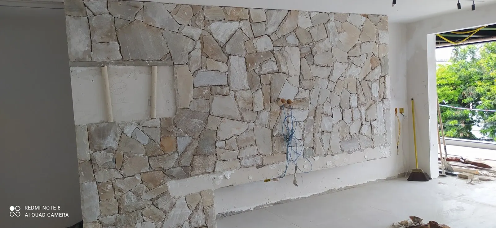
Serra, ES · Grande Vitória
Da regularização e do projeto à execução, inspeção e acompanhamento técnico, a D'Martins organiza cada etapa com atendimento direto e responsabilidade profissional.
Orçamento
O formulário abaixo organiza as informações essenciais e abre uma conversa pronta no WhatsApp.
Serviços
A D'Martins integra projetos, regularização, execução, inspeções e acompanhamento técnico para organizar decisões, reduzir retrabalho e dar mais previsibilidade à obra.
Reformas em casas, apartamentos, pontos comerciais e edifícios, com organização das etapas e cuidado no acabamento.
Orçar reformaExecução do início ao fim, com planejamento por fases, controle de qualidade e acompanhamento técnico.
Orçar construçãoDefinição de escopo, layout e soluções técnicas antes da execução para reduzir improvisos e retrabalho na obra.
Orçar projetoOrientação técnica para organizar a situação da obra ou do imóvel conforme os documentos e as exigências de cada caso.
Falar sobre regularizaçãoAvaliação das condições do imóvel e documentação técnica definida conforme a finalidade e o escopo contratado.
Solicitar avaliaçãoExecução para órgãos públicos com foco em prazo, qualidade e registro das etapas de serviço.
Falar sobre obraExecuções especializadas
O atendimento também contempla etapas específicas de construção, reforma e acabamento. A definição do serviço adequado depende da análise do local e do escopo da obra.
Obras realizadas
Registros de fundações, reformas, impermeabilização, piscina elevada, revestimentos, acabamentos e inspeção predial.
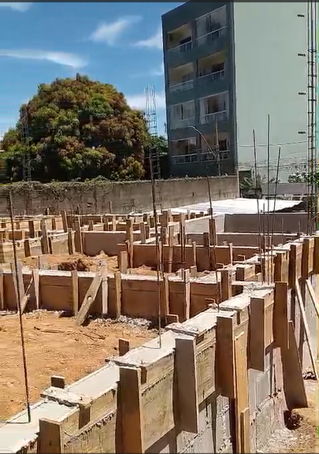
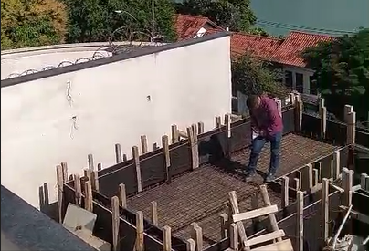
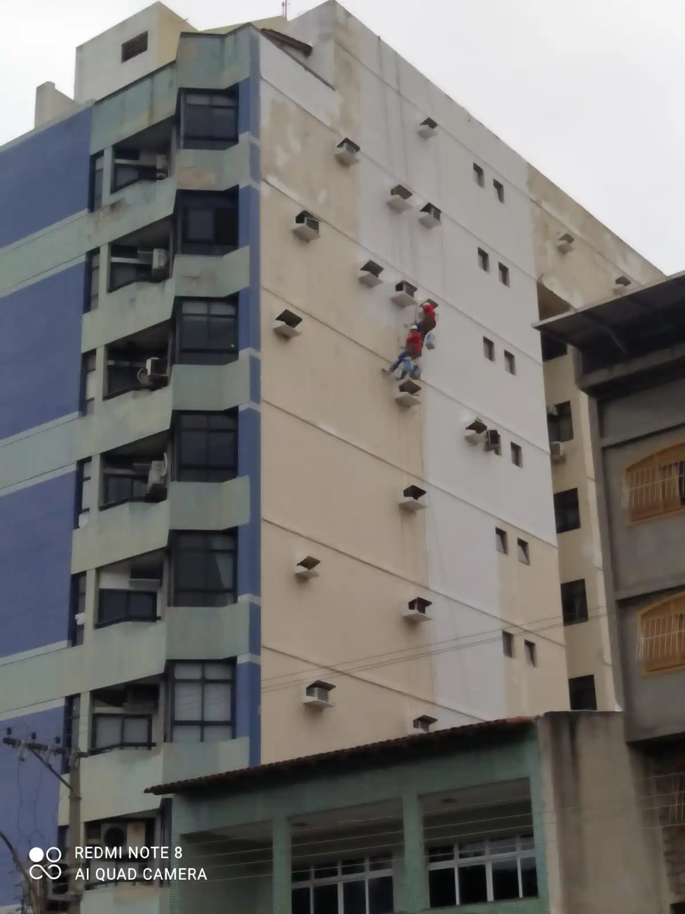
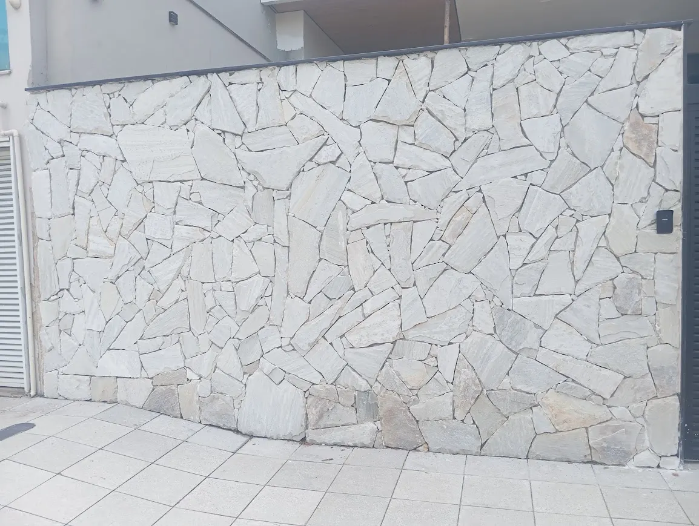
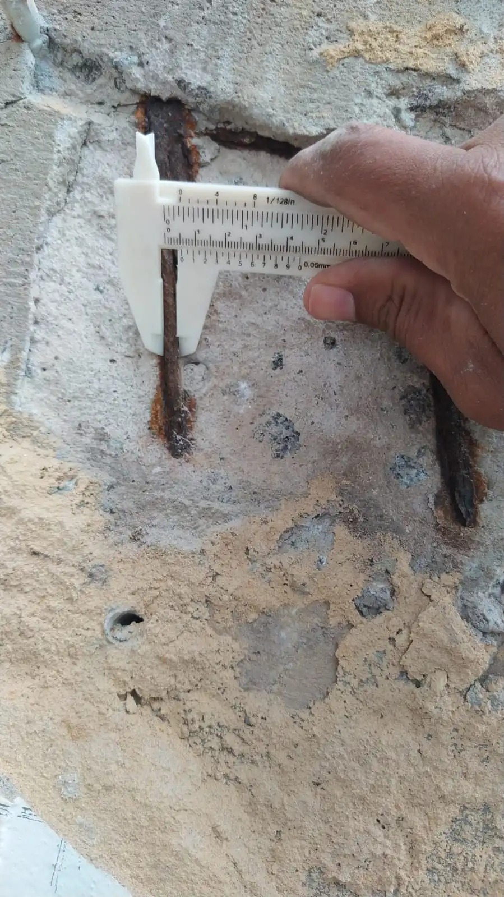
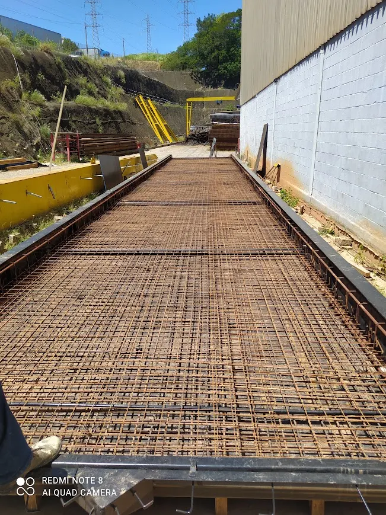
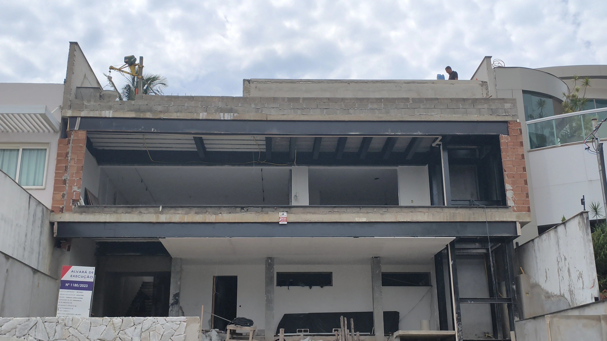
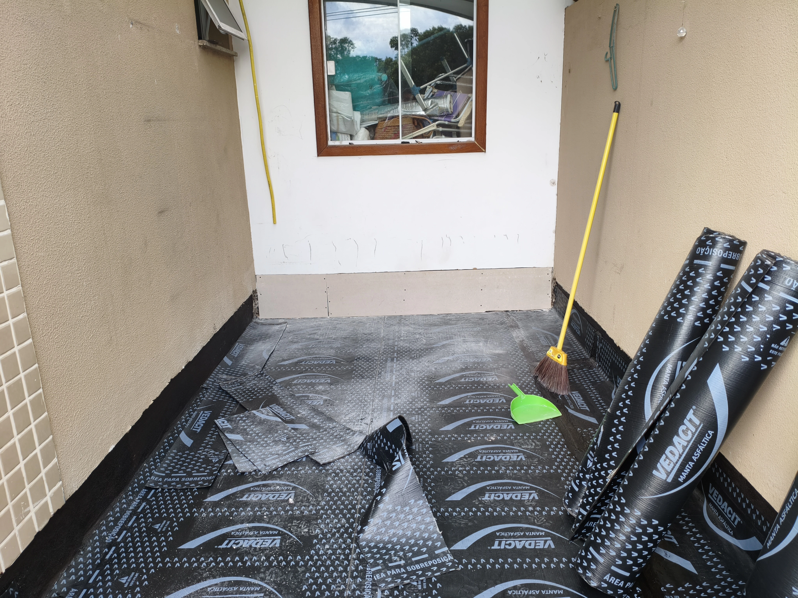
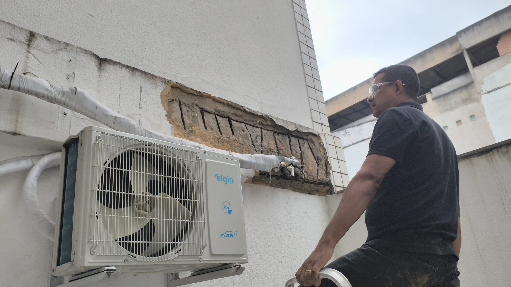
Como trabalhamos
A D'Martins atende direto pelo WhatsApp, entende a necessidade, avalia o escopo e direciona o atendimento para projeto, regularização, avaliação técnica, reforma ou execução.
Conversar com a equipe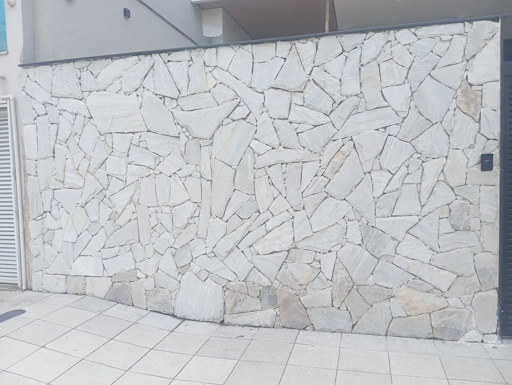
Responsabilidade técnica
A atuação técnica da D'Martins é conduzida por Wellington Carlos Corrêa, engenheiro civil registrado no CREA-ES sob o nº 50219/D. São mais de 15 anos de experiência na construção civil.
Dúvidas frequentes
Sim. A base fica na Serra, ES, com atendimento na Grande Vitória, incluindo Vitória, Vila Velha e Cariacica.
A empresa atua com reformas residenciais, comerciais e prediais, construções, projetos de arquitetura e complementares, regularização de obras e imóveis, inspeções, vistorias, laudos técnicos e obras públicas.
Sim. O escopo é definido após a análise da situação da obra ou do imóvel e dos documentos disponíveis.
Sim. O tipo de avaliação e de documentação técnica é definido de acordo com a finalidade, as condições do imóvel e a necessidade apresentada.
Sim. O ideal é enviar o tipo de serviço, local, etapa da obra, medidas aproximadas e fotos quando houver.
A necessidade e a extensão do acompanhamento são definidas conforme o serviço e o escopo contratado, com atuação de engenheiro civil.
Sim. Além de residências, a empresa atende comércios e obras públicas.
Contato
Chame no WhatsApp e envie as informações da obra. Quanto mais claro o primeiro contato, mais preciso fica o direcionamento.